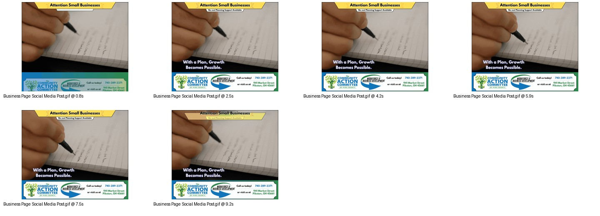

Animated Social Media Graphic / GIF
Small Business Animated Social Media Post
Designed an animated Facebook post for the Business Development Program to promote no-cost planning support for small businesses.

Project Goal
Create a professional, brand-conscious animated asset that avoided visual clutter while still catching attention in the social feed.
Tools: Canva, Stock footage
My Role
- Designed the animated post for Facebook release.
- Sourced stock footage.
- Built the animated graphic in Canva.
- Focused on quick readability, clean layout, and a clear small-business support message.
- Paired the post with a separately approved caption, not included in the reviewed files.
Process
- Kept the layout intentionally minimal.
- Used animation and stock footage to add movement without making the post feel busy.
- Designed around fast-read messaging for social media viewers.
Skills Demonstrated
- Animated social media design
- Facebook-first content design
- Brand-conscious layout
- Minimalist visual communication
- Stock footage integration
- Fast-read message hierarchy